Bibliografía
Documentación y Enlaces Oficiales
Acceso directo a la normativa vigente, guías de aplicación y recursos técnicos sobre la ITC-BT-12.
Organización y gestión del montaje de las instalaciones eléctricas en el entorno de edificios y con fines especiales
Acceso directo a la normativa vigente, guías de aplicación y recursos técnicos sobre la ITC-BT-12.
El Reglamento Electrotécnico para Baja Tensión es la norma general de aplicación para la realización de instalaciones eléctricas en España. Fue publicado en el año 2002 en el BOE nº 224 de fecha 18 de septiembre de 2002 (Real Decreto 842/2002), y es de aplicación obligatoria desde el 18 de septiembre de 2003. Su principal cambio respecto al anterior reglamento de 1973 es la utilización de Normas de Referencia (UNE) y su estructura modular basada en artículos e Instrucciones Técnicas Complementarias (ITCs).
Denominada "Documentación y puesta en servicio de las instalaciones", esta instrucción establece las condiciones administrativas y técnicas necesarias para la ejecución y legalización de cualquier instalación eléctrica. Determina los casos específicos en los que las instalaciones deben ejecutarse obligatoriamente sobre la base de un Proyecto Técnico redactado y firmado por un técnico titulado competente, o si es suficiente con una Memoria Técnica de Diseño (MTD) que puede ser cumplimentada por el instalador autorizado.
Cualquier instalación eléctrica en España debe contar de forma previa con un Proyecto o una MTD según los límites de potencia e importancia fijados por el reglamento:
| Grupo / Tipo de Instalación | Límites de Potencia Requeridos para Proyecto Técnico |
|---|---|
| Grupo A: Industrias en general | P > 20 kW |
| Grupo B: Locales húmedos, polvorientos o con riesgo de corrosión; bombas de agua | P > 10 kW |
| Grupo C: Locales mojados, generadores y convertidores | P > 10 kW |
| Grupo D: Instalaciones de carácter temporal en obras u emplazamientos abiertos | P > 50 kW |
| Grupo E: Edificios destinados principalmente a viviendas, locales comerciales u oficinas sin pública concurrencia | P > 100 kW por caja general de protección |
| Grupo F: Viviendas unifamiliares | P > 50 kW |
| Grupo G: Garajes con ventilación forzada | Cualquiera que sea su ocupación (Sin límite) |
| Grupo H: Garajes con ventilación natural | De más de 5 plazas de estacionamiento |
| Grupo I: Locales de pública concurrencia | Sin límite de potencia (Siempre requiere proyecto) |
| Grupo K: Alumbrado exterior | P > 5 kW |
| Grupo L: Locales con riesgo de incendio o explosión (excepto garajes) | Sin límite de potencia (Siempre requiere proyecto) |
| Grupo M: Quirófanos y salas de intervención | Sin límite de potencia (Siempre requiere proyecto) |
| Grupo N: Piscinas y fuentes | P > 5 kW |
Nota sobre promociones de viviendas: Una construcción nueva de un conjunto de viviendas (por ejemplo, 5 viviendas unifamiliares con grado de electrificación elevada) se tramita mediante Proyecto Técnico debido a que la instalación común y la previsión de cargas del conjunto del edificio vertical u horizontal superan los límites de la caja general de protección o forman una única unidad de promoción técnica.
Los planos de los proyectos eléctricos deben adaptarse estrictamente a los formatos normalizados por la serie A DIN. El formato base es el A0, que corresponde a una hoja rectangular de 1 m² de superficie, manteniendo siempre una relación de lados de √2 (1189 x 841 mm). Cada formato inmediato inferior se obtiene dividiendo el anterior exactamente por la mitad de su lado de mayor longitud:
La normalización del dibujo técnico regulada en España bajo la norma UNE-EN ISO 3098 define los tipos de líneas según su función gráfica en los planos:
La documentación técnica se divide según el grado de detalle, precisión y escala de la representación:
El recorrido de la energía desde la red pública exterior hasta la vivienda u oficina consta de los siguientes componentes ordenados de manera secuencial:
El cuadro eléctrico se sitúa en la entrada de la vivienda y contiene los siguientes interruptores de seguridad:
El REBT divide el diseño de la instalación interior de las viviendas en dos clasificaciones básicas en función de la superficie útil de la vivienda y la previsión de electrodomésticos:
Obligatorio para cubrir las necesidades primarias de utilización. Se aplica cuando la potencia máxima admisible es menor o igual a 9.200 W. Debe contar obligatoriamente con los siguientes 5 circuitos independientes:
Es obligatorio en viviendas con una superficie útil superior a 160 m², o cuando exista previsión de instalar sistemas de calefacción eléctrica, aire acondicionado, automatización, gestión de la energía o una cantidad importante de electrodomésticos que obliguen a doblar circuitos. Instala, además de los cinco circuitos básicos, los siguientes:
El punto de conexión es el lugar físico otorgado por la empresa distribuidora para el enganche de nuestro suministro eléctrico en Baja Tensión. Se clasifican de la siguiente manera:
Los tipos de conexión que pueden darse se clasifican según sean:
Además de la protección general se instalarán protecciones a los circuitos que veremos a continuación. La estructura interior por tanto de una CGMP será:
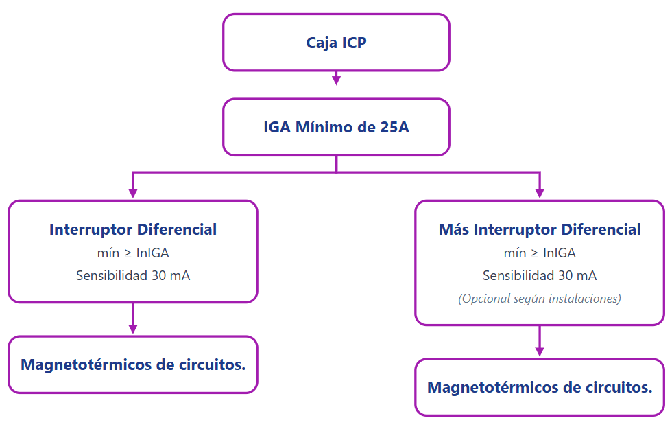
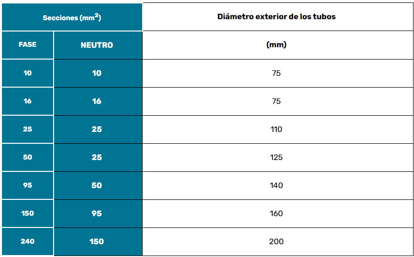
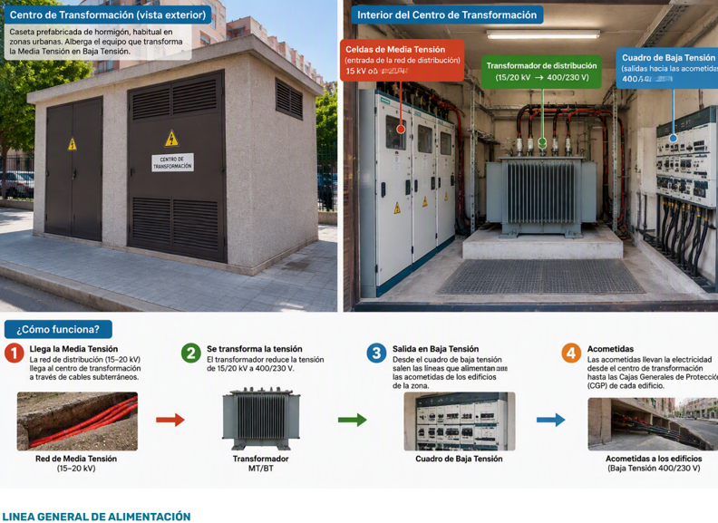
LGA:
La línea general de alimentación es la línea que une la CGP con la centralización de contadores o el contador.
En el caso de contadores de un único usuario o dos usuarios alimentados desde el mismo lugar se considera que no existe LGA, dado que esta se encuentra sólo como un puente de corta longitud dentro de la propia caja de protección y medida.
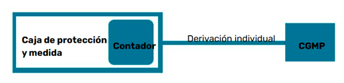
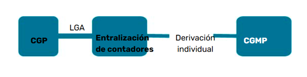
Será la sección en mm² del conductor empleado en la línea general de alimentación.
Será el material empleado como conductor en la LGA. Habitualmente la línea general de alimentación será de Cobre, aunque en casos especiales puede emplearse aluminio.
Derivación individual:
La derivación individual será la línea destinada a unir la LGA a través del contador del suministro incluido su fusible con los circuitos interiores de vivienda. Comprende también las protecciones de la Caja General de Mando y Protección del suministro.
Será la sección en mm² del conductor empleado en la derivación individual.
Será el material empleado como conductor en la DI. Habitualmente la línea general de alimentación será de Cobre, aunque en casos especiales puede emplearse aluminio.
IGM:
El interruptor general de maniobra será aquél elemento destinado a posibilitar el corte en carga de la corriente a la entrada de la centralización de contadores.
Se expresará la capacidad nominal según la hoja de especificaciones técnicas del Interruptor general de maniobra expresado en Amperio (A)
Se expresará el poder de corte en carga del IGM expresado en kiloamperios (kA). El poder de corte es la máxima intensidad a la cual el interruptor es capaz de cortar el suministro aguas abajo sin dañarse asegurando que dicho corte se realiza después de actuarlo. Por encima de esta cantidad de Amperios el elemento podría no realizar el corte de forma efectiva tras tratar de actuarlo. Este dato debe aparecer en la hoja de características del elemento.
Se expresará el número de derivaciones individuales que se encuentran aguas abajo de la centralización de contadores.
Verdadero izquierda falso a la derecha, ejemplo, el primer punto es verdadero
Se distingue los siguientes tipos de módulos de medida:
atendiendo a donde están situados se distinguen tres tipos de ubicación e módulos de medida:
Se indicará en Amperios la intensidad del interruptor general automático. Este elemento se verá en más detalle en esquemas posteriores y un elemento de corte general del cuadro de mando y protección de la vivienda. Su valor mínimo es de 25 Amperios para viviendas de grado de electrificación básica.
Se represaran la Intensidad nominal del Diferencial instalado en la Caja General de Mando y Protección del suministro. Dado que pueden existir varios diferenciales se expresaría en su caso la suma de las intensidades nominales de los diferenciales que existan en conexión en paralelo conectados al Interruptor General Automático. En cuanto a la sensibilidad, es habitualmente de 30 miliamperios (mA) y sería este valor el expresado como sensibilidad cuando todos los interruptores diferenciales tengan esta sensibilidad. Existe disparidad de criterios entre Comunidades cuando se dan casos diferentes. En principio si existen diferenciales de diferentes sensibilidades, por ejemplo existen dos diferenciales de 30 mA y uno de 50mA, lo normal es dar el dato más desfavorable, en este caso 50 mA o expresar 30/50 mA.
Atendiendo a la forma de los elementos empleados para tomas de tierra podemos encontrarnos la siguiente clasificación:
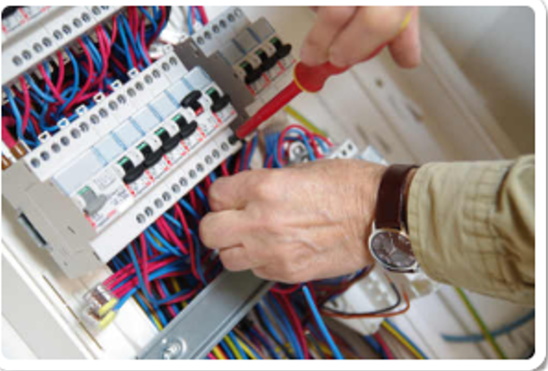
Son las más empleadas y consisten en una barra metálica que tiene por finalidad ser hincada en el terreno y mediante abrazadera y conductor desnudo o aislado conectarse al cableado de tierra de la instalación.
Se emplean de modo similar al anterior, si bien por su forma logran una mayor superficie de contacto con el terreno. Son recomendables para terrenos con conductividad baja, aunque dado que requieren una mayor complejidad para ser enterrados en el terreno tiende a emplearse menos que las anteriores.
Se emplean cuando se requieren grandes superficies de contacto por ejemplo en el caso de subestaciones de transformación. Requieren gran superficie de contacto y por tanto grandes movimientos de tierras.
Se expresará la sección en mm² que posee el conductor desde los elementos anteriores (picas de tierra, placas o mallas) hasta la CGMP del suministro. Si el conducto posee secciones diferentes desde las picas hasta la CGMP suele expresarse el menor de ellos por ser el más desfavorable.
Se expresará en mm² la sección en mm² seleccionada para la instalación interior del suministro.
Este esquema es el que se utilizará normalmente en conjuntos de edificación vertical u horizontal, destinados principalmente a viviendas, edificios comerciales, de oficinas o destinados a una concentración de industrias.
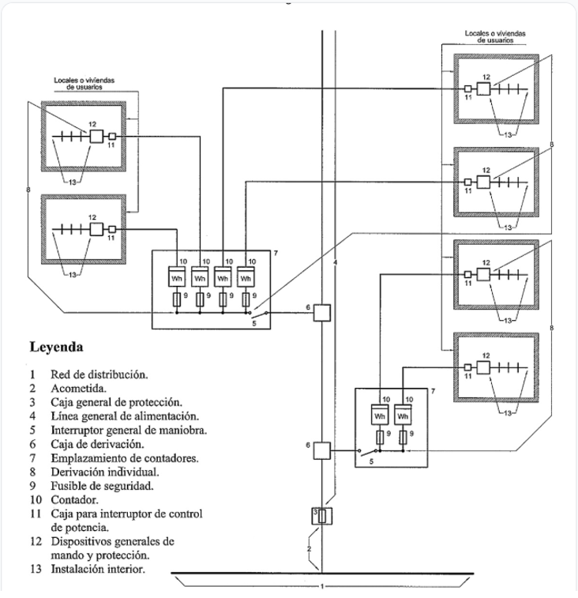
Se rellenarán los datos de la persona responsable de la realización y diseño de la instalación, según quien haya redactado la MTD:
De este modo puede observarse que una empresa instaladora puede ser la empresa ejecutora de la instalación y también quien realice la MTD.
El resto de pasos a determinar en la MTD serán la previsión de cargas, que paseamos a ver en el punto siguiente.
Instalación de enlace: es la instalación que comprende desde la Caja General de Protección hasta la Caja de Mando y Protección de la vivienda.
Es decir es la parte de la instalación que une desde el límite de propiedad de la compañía/titular hasta la Caja que protege los circuitos interiores de vivienda (CGMP), comprendiendo por tanto: CGP, LGA, Contador o Contadores y aparamenta, derivaciones individuales hasta la CGMP y la protecciones de ella.
Los dispositivos generales de mando y protección, se situarán lo más cerca posible del punto de entrada de la derivación individual en el local o vivienda del usuario. En viviendas y en locales comerciales e industriales en los que proceda, se colocará una caja para el interruptor de control de potencia (ICP), inmediatamente antes de los demás dispositivos, en compartimento independiente y precintable. Dicha caja se podrá colocar en el mismo cuadro donde se coloquen los dispositivos generales de mando y protección.
El Interruptor de Control de Potencia ICP, es un requisito necesario para el control por parte de la compañía suministradora para asegurar que el consumo de potencia en el interior del local suministrado no excede la potencia contratada. Este es el motivo por el cual la caja en que se ubique debe ser precintable para evitar su eventual manipulación. Cuando nos indica que se colocarán en aquellos locales “que proceda” es debido a diversos motivos que pueden obviar la instalación de ICP. En el caso general en que tenemos edificios de viviendas y locales comerciales garajes etc. en que cada usuario contrata individualmente su suministro eléctrico la necesidad de instalación de caja para ICP es total. Sin embargo cuando debido a su naturaleza, por ejemplo en consumos grandes en los que la contratación asegura que el control de la potencia se realizará por otros medios como es la instalación de maxímetro, la necesidad de la caja de ICP y colocación de ICP puede ser obviado por el técnico redactor. Sin embargo si existe la posibilidad de contratar tanto con maxímetro como sin él, mantener la instalación de caja para ICP es necesaria.
Maxímetro:
Un maxímetro o medidor de demanda es un instrumento de medición eléctrico cuya finalidad es obtener el valor máximo de la potencia eléctrica demandada durante un periodo de tiempo (normalmente el periodo de facturación de una compañía suministradora de energía eléctrica).
Además, en la actualidad la posibilidad de incorporar a cualquier contrato nuevo la regulación de potencia a través del propio contador electrónico hace que de nuevo se pueda poner en duda la necesidad de instalación de ICP. No obstante se sigue recomendando la instalación del mismo, pues los mecanismos por los que los contadores electrónicos regulan el control de la potencia y su posterior rearme pueden provocar el corte del suministro hasta rearme manual en el propio contador, cuestión que puede provocar diversas molestias a los usuarios de suministros de locales y viviendas.
Con todo esto por tanto, en general se instalará una caja homologada por la compañía en todos los suministros, ubicada justo antes de la CGMP, o integrada en ella, siempre que la compañía haya permitido su uso. En aquellos casos en que la caja esté integrada dentro de la propia CGMP habrá de ser precintable en la parte destinada a ubicar el interruptor ICP.
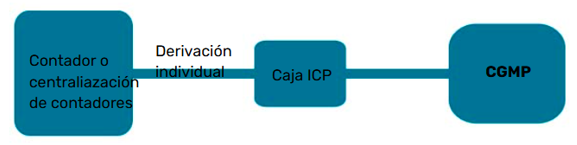
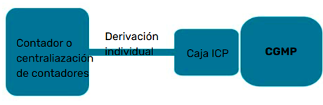
En viviendas, deberá preverse la situación de los dispositivos generales de mando y protección junto a la puerta de entrada y no podrá colocarse en dormitorios, baños, aseos, etc. En los locales destinados a actividades industriales o comerciales, deberán situarse lo más próximo posible a una puerta de entrada de éstos.
Los dispositivos individuales de mando y protección de cada uno de los circuitos, que son el origen de la instalación interior, podrán instalarse en cuadros separados y en otros lugares.
En locales de uso común o de pública concurrencia, deberán tomarse las precauciones necesarias para que los dispositivos de mando y protección no sean accesibles al público en general.
La altura a la cual se situarán los dispositivos generales e individuales de mando y protección de los circuitos, medida desde el nivel del suelo, estará comprendida entre 1,4 y 2 m, para viviendas. En locales comerciales, la altura mínima será de 1 m desde el nivel del suelo.
Los dispositivos generales e individuales de mando y protección, cuya posición de servicio será vertical, se ubicarán en el interior de uno o varios cuadros de distribución de donde partirán los circuitos interiores.
La envolvente para el interruptor de control de potencia será precintable y sus dimensiones estarán de acuerdo con el tipo de suministro y tarifa a aplicar. Sus características y tipo corresponderán a un modelo oficialmente aprobado.
Los dispositivos generales e individuales de mando y protección serán, como mínimo:
Además de la protección general se instalarán protecciones a los circuitos que veremos a continuación. La estructura interior por tanto de una CGMP será:
Por cada cinco circuitos se instalará un diferencial, de modo que si tenemos más de cinco circuitos interiores para un suministro tendremos que instalar 2 ó más interruptores diferenciales.
A continuación estudiaremos en función de las previsiones de cargas el número de circuitos necesarios para nuestra instalación interior
En las siguientes secciones la MTD solicita datos de las previsiones de carga por circuito. Dado que estos datos serán tratados en la siguiente sección continuaremos con el resto de elementos solicitados de las características de la instalación.
Se nos permite aquí describir más de una línea general de alimentación en previsión de que el edificio pueda instalar más de una CGP. En general esto sólo ocurrirá en caso de edificios de muchos suministros, pero en tales casos suele requerirse un proyecto en lugar de MTD (para más de 100 kW en viviendas por ejemplo según la tabla 3.1)
| Secciones (mm²) | Diámetro exterior de los tubos | |
|---|---|---|
| FASE | NEUTRO | (mm) |
| 10 | 10 | 75 |
| 16 | 16 | 75 |
| 25 | 25 | 110 |
| 50 | 25 | 125 |
| 95 | 50 | 140 |
| 150 | 95 | 160 |
| 240 | 150 | 200 |
Habitualmente las LGA son de Cobre aunque pueden realizarse también en aluminio. Debe tenerse en cuenta que ambos materiales cobre y aluminio no pueden conectarse directamente, sino que en aquél punto en que una instalación de aluminio cambie a cobre como material conductor debe ser unida a través de una placa bimetal o terminales bimetal. Para permitir el correcto mantenimiento y estado de las placas bimetal, éstas suelen estar incorporadas en las CGP. De este modo ya que las CGP suelen estar instaladas en el límite de propiedad entre vía pública y zona privada la inspección de la misma resultará más sencilla.
Se seleccionará el aislamiento empleado en la LGA. El nivel de aislamiento cumplirá con una tensión asignada 0,6/1kV, además de ser no propagadores de incendio y con emisión de humos en caso de incendio reducida. Es habitual que los cables de las líneas generales se encuentren en trayectos muy próximos a las zonas comunes de los edificios, de ahí que en caso de incendio podrían afectar a la visibilidad de las salidas, de ahí la exigencia de la norma para ellos. Indicar que el caso de LGA las líneas deberán transcurrir encerradas, enterradas o en conductos cerrados pero registrables que cumplan con lo estipulado en la ITC-BT-14. Por ejemplo en el caso de que se emplearan conductos con canales protectoras la norma exige que su apertura deba realizarse con un útil.
La caída de tensión máxima permitida para la LGA será del 0,5 % en caso de que la línea alimente una única centralización de contadores. En caso de que existan centralizaciones de contadores parciales, es decir, no se encuentren completamente centralizados, se permitirá hasta el 1% de caída de tensión.
Se indicará el dato de la intensidad nominal de los cartuchos o fusibles que protegen la línea, es decir los ubicados en la CGP.
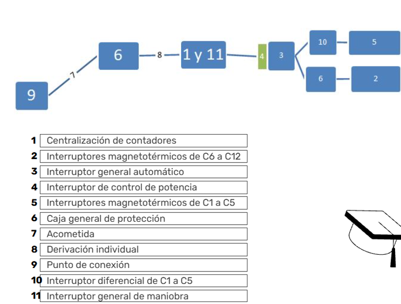
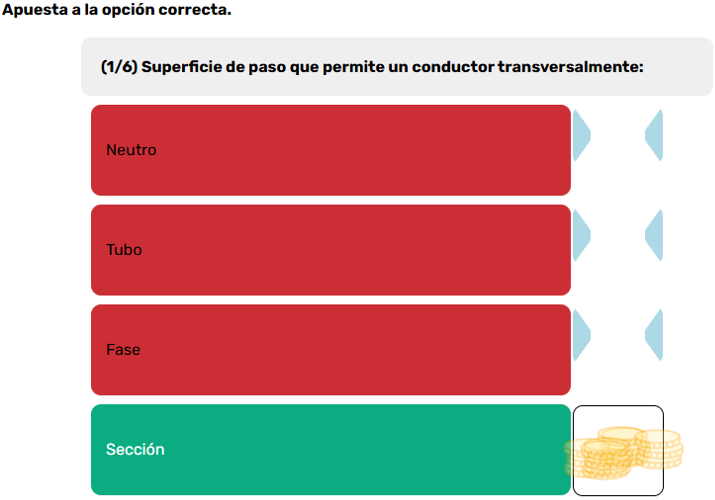
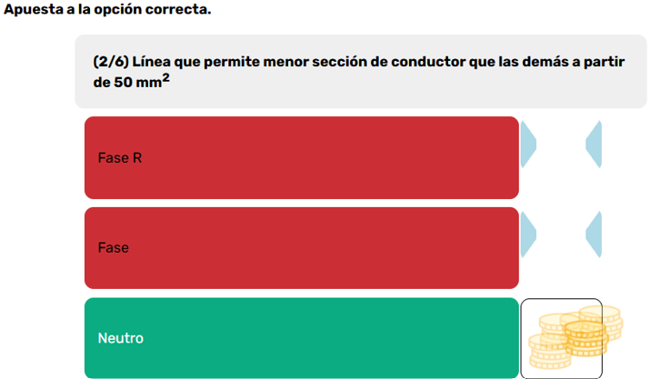
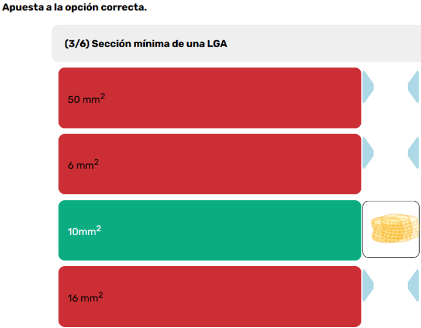
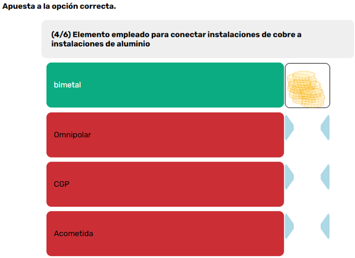
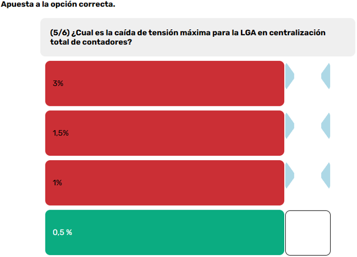
Datos de suministros: Se indicarán aquí los datos del número de suministros, así como su tipo (monofásicos, trifásicos <15 ó > 43,5 kW) así como el número de cada tipo, y su ubicación u ubicaciones caso de que existan centralizaciones parciales.
Deben permitir el corte en carga de los embarrados y por tanto suministros que contenga agua abajo, por lo que el valor de Intensidad nominal y el poder de corte deben garantizar su aptitud para los suministros que contiene.
Se describirán el número de derivaciones individuales y el nº de cada una de ellas. Número de tipo de cada una de ellas que será empleado posteriormente en la descripción de las protecciones de la CGMP y resto de datos técnicos definidos por sus secciones y nº de fases (1 ó 3), materiales de conductor y aislamientos. Para su caída de tensión máxima se atenderá al siguiente criterio:
Se refiere al dato en amperios del fusible que protege la derivación individual aguas abajo, es decir, al que se haya empleado en la conexión del embarrado de la centralización de contadores.
Se definirán en función de los tipos anteriores de derivaciones individuales que existan en el edificio, incluido número de fases y sección del conductor.
Se indicará a continuación el tipo de caja de ICP 29 ó 36. Los números 29 ó 36 se corresponden con el mayor diámetro interior, expresado en milímetros, de los tubos que contienen los cables de derivación individual. 29 mm corresponderá al diámetro interior de tubo de 32 mm, que es además el mínimo que puede instalarse para derivaciones individuales, y 36 se corresponde al diámetro interior de tubo de 40 mm habitualmente.
Además se definirán los datos del IGA Interruptor General de Maniobra instalado mediante su intensidad nominal en amperios y poder de corte en kiloamperios.
En el caso del interruptor diferencial nos permite la selección de sensibilidad entre 10, 30 ó 300 mA, aunque en el caso de vivienda requeriría la selección de uno de los dos primeros.
Por último definimos los tipos de montaje y sus acrónimos atendiendo a la trayectoria y sujeción elegidas para los tipos de montajes en dos clasificaciones posibles, según sean de la parte de la instalación que comprende toda la instalación interior general (1) ó los específicos permitidos de interior de vivienda (2).
| Acrónimo | Sistema de montaje |
|---|---|
| T.P. | Bajo Tubo Protector |
| F.D.P. | Fijado Directamente sobre Pared |
| ENTR. | Enterrado |
| D.E.E. | Directamente Empotrados en Estructura |
| AERO | Aéreo |
| I.H.C. | Interior Huecos de la Construcción |
| C.P. | Bajo Canales Protectores |
| MOLD. | Bajo moldura |
| BANDJ. | En Bandeja |
| C.E.P. | En Canalización Eléctrica Prefabricada |
| Acrónimo | Sistema de montaje |
|---|---|
| E.T.F. | Empotrado en Tubo Flexible |
| E.T.C. | Empotrado en Tubo Curvable |
| S.T.C. | Superficial en Tubo Curvable |
| S.T.R. | Superficial en Tubo rígido |
| S.C.P. | Superficial en Canal protector cerrado |
| S.C.P.F. | Superficial en Canalización Prefabricada |
Material formativo: previsión de cargas, cálculo de circuitos, pliegos de condiciones, mediciones, presupuestos, seguridad y salud, certificados e inspecciones.
En toda intervención de instalaciones eléctricas que se diseña previamente al funcionamiento de la misma existe la necesidad de estimar qué cantidad de energía será necesaria en la instalación; es decir, hacer una previsión de carga. Para ello, la norma establece unos valores mínimos de previsión en función del tipo de uso de los edificios que construimos. No obstante, estos serán valores mínimos, por lo que, si se dispone de datos sobre previsiones que superen estos valores, será necesario basarse en el caso más desfavorable, es decir, el que mayor previsión de carga suponga repercutirá en la estimación.
Para los valores mínimos se distinguen los distintos usos que se prevén en la norma y su previsión de cargas.
Estimación de la previsión de cargas según los distintos tipos de usos:
La carga máxima por vivienda depende del grado de utilización que se desea alcanzar, en función de si su electrificación recomendada es de grado básico o elevado. Se pretende evitar que una vivienda, una vez construida, requiera posteriores intervenciones para adaptar circuitos interiores o aumentar la potencia. Debe permitir la utilización de los aparatos eléctricos de uso común en una vivienda.
En el grado de electrificación básico, la potencia a instalar no será menor de 5.750 W.
Se empleará cuando las necesidades de electrificación de las viviendas que se construyen puedan requerir un mayor grado de electrificación para una previsión futura. Corresponde a viviendas con previsión de utilización de aparatos electrodomésticos superior a la electrificación básica, o con previsión de utilización de sistemas de calefacción eléctrica o de acondicionamiento de aire, o con superficies útiles superiores a 160 m², o cualquier combinación de los casos anteriores.
Por ejemplo, son indicios de necesidad de electrificación elevada: prever una instalación de aire acondicionado en gran parte de la vivienda; prever calefacción eléctrica en gran parte de la misma; prever sistemas de superior consumo, como automatización de la vivienda, ventanas o persianas motorizadas; prever secadora u otros elementos de cocina superiores a los normales; disponer de más de 30 puntos de luz; más de 20 tomas de corriente de uso general; más de 6 tomas auxiliares de cocina y baño; u otros casos similares.
En las viviendas con grado de electrificación elevada, la potencia a prever no será inferior a 9.200 W. En la práctica, el grado de electrificación depende de los escalones del valor que pueda instalarse para el interruptor general automático. Aunque teóricamente en electrificación básica podría instalarse cualquier valor comprendido entre 5.750 W y 9.200 W, en la práctica vienen determinados por las intensidades nominales de los interruptores generales: 5.750 W para 25 A y 7.360 W para 32 A.
El promotor, propietario o usuario del edificio fijará de acuerdo con la empresa suministradora la potencia a prever, que, para nuevas construcciones, no será inferior a 5.750 W a 230 V en cada vivienda, independientemente de la potencia a contratar por cada usuario, que dependerá de la utilización que este haga de la instalación. En todos los casos, la potencia a prever se corresponderá con la capacidad máxima de la instalación, definida por la intensidad asignada del interruptor general automático.
| Electrificación | Potencia (W) | Intensidad nominal del IGA (interruptor general automático) |
|---|---|---|
| Básica | 5.720 | 25 A |
| Básica | 7.360 | 32 A |
| Elevada | 9.200 | 40 A |
| Elevada | 11.500 | 50 A |
| Elevada | 14.490 | 63 A |
La carga total correspondiente a un edificio destinado principalmente a viviendas resultará de la suma de la carga correspondiente al conjunto de viviendas, de los servicios generales del edificio, de la correspondiente a los locales comerciales y de los garajes que formen parte del mismo.
Sin embargo, como no todos los habitantes de un edificio estarán demandando la potencia máxima prevista al mismo tiempo, la norma prevé la utilización de coeficientes de simultaneidad, factor que sirve para minorar el total de potencia previsto para las viviendas a la vez.
Se obtendrá multiplicando la media aritmética de las potencias máximas previstas en cada vivienda por el coeficiente de simultaneidad indicado en la tabla, según el número de viviendas.
| N.º de viviendas (n) | Coeficiente de simultaneidad |
|---|---|
| 1 | 1 |
| 2 | 2 |
| 3 | 3 |
| 4 | 3,8 |
| 5 | 4,6 |
| 6 | 5,4 |
| 7 | 6,2 |
| 8 | 7 |
| 9 | 7,8 |
| 10 | 8,5 |
| 11 | 9,2 |
| 12 | 9,9 |
| 13 | 10,6 |
| 14 | 11,3 |
| 15 | 11,9 |
| 16 | 12,5 |
| 17 | 13,1 |
| 18 | 13,7 |
| 19 | 14,3 |
| 20 | 14,8 |
| 21 | 15,3 |
| n > 21 | 15,3 + (n − 21) · 0,5 |
La indicación es que se multiplique la media aritmética de las potencias previstas por el número de viviendas por el coeficiente indicado. Para un edificio con más de 21 viviendas se aplica la expresión indicada en la última fila.
Será la suma de la potencia prevista en ascensores, aparatos elevadores, centrales de calor y frío, grupos de presión, alumbrado del portal, caja de escalera y espacios comunes, así como cualquier otro servicio eléctrico general del edificio, sin aplicar coeficientes de reducción por simultaneidad.
Se calculará considerando un mínimo de 100 W por metro cuadrado y planta, con un mínimo por local de 3.450 W a 230 V y un coeficiente de simultaneidad de 1. Para locales cuya superficie sea superior a 3.450 m² se instalarán al menos 3.450 W.
En cualquier caso, para los edificios destinados a concentración de industrias se considerará un mínimo de 125 W por metro cuadrado y planta, sin que la previsión de carga pueda ser inferior a la suma de las potencias previstas para las industrias.
¿Qué previsión de carga total habría que prever para dos industrias de 61 m² y otras dos industrias de 190 m², si no se dispone de otros datos?
Solución: se estima primero la carga mínima para cada tipo. Para cada industria de 61 m², la potencia calculada por superficie es 61 m² × 125 W/m² = 7.625 W; al ser inferior a 10.350 W, se toma este último valor como previsión mínima para cada una. Para cada una de las otras dos industrias de 190 m²: 190 m² × 125 W/m² = 23.750 W. Por tanto, 2 × 10.350 + 2 × 23.750 = 68.200 W de carga total prevista.
Se calculará un mínimo de 10 W por metro cuadrado para garajes con ventilación natural y de 20 W por metro cuadrado para los de ventilación forzada, con un mínimo de 3.450 W a 230 V y coeficiente de simultaneidad 1.
| M² de garaje · ventilación natural | M² de garaje · ventilación forzada | Potencia mínima a instalar (W) | Intensidad nominal del IGA (interruptor general automático) |
|---|---|---|---|
| 345 | 172,5 | 3.450 | 25 A (CPI) |
| 460 | 230 | 4.600 | 25 A (CPI) |
| 575 | 287,5 | 5.750 | 25 A |
| 736 | 368 | 7.360 | 32 A |
| 920 | 460 | 9.200 | 40 A |
| 1.150 | 575 | 11.500 | 50 A |
| 1.449 | 724,5 | 14.490 | 63 A |
Rellena los huecos de la tabla con los valores de superficie máxima para garajes en función de su potencia instalada y el IGA que correspondería a la instalación.
| M² garaje Ventilación natural | M² garaje Ventilación forzada | Potencia mínima a instalar (W) | Intensidad nominal del IGA (interruptor general automático) |
|---|---|---|---|
| — | — | — | — |
| — | — | 4.600 | — |
| — | — | — | — |
| — | — | 7.360 | — |
| — | 460 | — | — |
| 1.150 | 575 | — | 50 |
| 1.449 | 724,5 | 14.490 | — |
La superficie se calcula aplicando 10 W/m² para ventilación natural y 20 W/m² para ventilación forzada. Los valores de la tabla corresponden a los escalones de potencia y calibres del IGA mostrados en el material.
Para calcular correctamente los cables de una instalación eléctrica se deben cumplir dos normas de seguridad básicas: que los cables no se calienten en exceso (intensidad máxima admisible) y que la energía no pierda fuerza en el camino (caída de tensión máxima del 3 %).
Esta fórmula sirve para averiguar cuánta corriente real (I) va a circular por un circuito. En lugar de sumar de forma indiscriminada la potencia de todos los electrodomésticos, se consideran:
La tabla de circuitos de vivienda (desde C1 a C11) establece, para cada circuito, el número máximo de puntos de utilización o tomas, la sección mínima de los conductores (en suministros monofásicos), las protecciones incluidas y los factores Fs y Fu considerados en los datos de partida.
Por su extensión y alcance, el material no desarrolla aquí todos los detalles del cálculo de líneas eléctricas. Para el cálculo de líneas y secciones remite a la guía del ministerio por su idoneidad didáctica.
Supuesto un circuito C1 de vivienda, con 20 puntos de luz a 230 V y sección de cobre de 1,5 mm² en plástico termoestable, se permite una caída de tensión del 3 %. Se pregunta cuál es la distancia máxima de línea para colocar un punto de luz manteniendo la sección del cable de 1,5 mm² por el criterio de caída de tensión.
Una caída del 3 % en un circuito de 230 V supone una caída máxima de 6,9 V.
Con e = 6,9 V, intensidad máxima de circuito I = 10 A, sección S = 1,5 mm² y resistividad del cobre a 90 °C ρ = 0,0229 Ω·mm²/m:
El ejemplo considera el caso más desfavorable: conductor a 90 °C, intensidad prevista y carga de 10 A activa durante el cálculo.
El ejercicio presenta los siguientes elementos para ordenar dentro de la instalación:
La lista reproduce las denominaciones visibles en el ejercicio «Orden correcto en la instalación».
Estos pliegos contemplan obligaciones por parte de la empresa contratista, así como de los técnicos redactores y de la dirección de obra y promotor. Generalmente determinan también los medios a emplear, tipos de procesos, etc.
Desde el punto de vista de la obra, constituye el contrato para la ejecución e incluirá, dependiendo del tipo de pliego, las especificaciones que regirán el desarrollo de los trabajos y los supuestos que puedan darse durante los mismos.
Los pliegos de condiciones pueden dividirse, como suele hacerse, en distintas partes:
Este apartado incluirá una descripción general de los trabajos a realizar, objetivo, uso esperado, etc.
Dividirá los grupos de obras a realizar según su ejecución temporal; por ejemplo, acometida, instalaciones de enlace e instalaciones interiores, estableciendo las distintas condiciones específicas de cada parte.
La documentación del contrato de obra recogerá los aspectos legales del proyecto y fijará las condiciones que regirán la ejecución, los controles de calidad exigidos y las normas y leyes que rigen el proyecto. Entre la documentación se incluyen:
Establece las obligaciones y aspectos a desarrollar por el contratista de la obra.
Establece las obligaciones del técnico que dirigirá la obra, incluyendo aspectos como la resolución de dudas, tiempos de ejecución y otros aspectos no definidos.
Establece los criterios de aprobación de los trabajos en términos de calidad de ejecución y corrección.
Establece las obligaciones de las partes ante trabajos que no hayan cumplido los requisitos de calidad exigidos en el apartado anterior.
Establece las obligaciones a resolver por las partes en caso de que los materiales instalados no hayan aprobado los criterios, por ejemplo en ensayos, y el alcance a resolver por cada parte.
Establecerá en qué términos deben ejecutarse las pruebas y ensayos, quién corre con los gastos y cómo se actuará ante resultados no satisfactorios.
Aspectos generales de la gestión económica de la obra.
Establecerá las garantías que se aportan, los tiempos de estancia de las mismas, su devolución o cancelación y la forma de las garantías.
Establecerá las revisiones de precios y los criterios por los que estos se establecen antes y durante la ejecución de los trabajos.
Establecerá cómo se realizarán las mediciones y valoraciones de obra.
Establecerá, dentro de las condiciones generales, aspectos que debe cumplir el contratista, por ejemplo que esté establecido como instalador autorizado y, en caso de que se trate de una entidad, su clasificación mínima y requisitos.
Para obras con concurso de adjudicación o similares, establecerá los plazos y la forma de adjudicación del contratista.
Se describirán las características a cumplir de los distintos elementos de la instalación, incluidas las normativas y especificaciones técnicas generales de cada equipo.
Según se incluyan los trabajos de obra civil dentro del mismo contrato o se encuentren divididos, se regularán los requisitos a cumplir por el adjudicatario de cada parte.
Si pudieran realizarse trabajos distintos o ampliaciones de los trabajos originales, se regularán aquí las condiciones técnicas de otros trabajos que pudieran requerirse durante la ejecución de la obra principal.
Objeto de esta parte del pliego.
Relación de normativa vigente en el momento de la adjudicación del contrato.
Se describirán todos los requisitos técnicos que deben cumplir los equipos a instalar.
Relación de medios y equipos técnicos, alcance de los registros y requisitos administrativos de los instaladores para la organización territorial en la que se ubique la obra.
Obligaciones de los usuarios de los equipos para la correcta seguridad y mantenimiento de la garantía de los equipos eléctricos.
Se adjuntarán instrucciones de uso y mantenimiento para la seguridad futura y el mantenimiento de la garantía de los equipos y elementos instalados.
Se definirán los alcances de la puesta en marcha y pruebas funcionales, así como la documentación que debe aportar el contratista y los aspectos de legalización de las instalaciones.
Las obligaciones de inspección y revisión de determinados equipos e instalaciones quedarán documentadas para conocimiento del promotor o de futuros usuarios.
Incluye medidas preventivas generales, estabilidad de las máquinas, partes accesibles, elementos móviles, máquinas eléctricas, ruidos y vibraciones, puesto de mando de las máquinas, desconexión de la máquina, parada de emergencia, mantenimiento, ajuste, regulación, engrase, alimentación u otras operaciones a efectuar en las máquinas y transporte.
Resumen global de objetivos y prescripciones a cumplir en los distintos pliegos y fueros de resolución de conflictos que no hayan podido resolverse por otros medios.
Las mediciones del proyecto constituyen la parte donde se describen las unidades de obra a ejecutar y se establecen las cantidades necesarias para completar correctamente los trabajos. Las unidades de obra se suelen agrupar en capítulos dentro de la ejecución total. El objetivo es separar los trabajos que se ejecutan en oficios diferentes o en fases relativamente secuenciales, con capítulos ordenados según el comienzo de cada uno.
Estas unidades permiten realizar la medición mediante la suma de unidades medibles o estimables sobre planos o croquis, multiplicadas por partidas que incluyen los descompuestos de material, mano de obra, auxiliares, etc., que requiere la obra.
Por tanto, realizar mediciones consiste en reconocer las unidades de obra en forma de partidas agrupadas en capítulos y multiplicarlas por el número de unidades que se medirán sobre plano o por el procedimiento que permita aproximarse mejor a la medida real.
| N.º de capítulo | Nombre del capítulo |
|---|---|
| 1 | DEMOLICIONES |
| 2 | ACONDICIONAMIENTO DE TERRENOS |
| 3 | SANEAMIENTO |
| 4 | CIMENTACIÓN Y ESTRUCTURAS |
| 5 | ALBAÑILERÍA |
| 6 | CUBIERTAS, IMPERMEABILIZACIÓN Y AISLAMIENTOS |
| 7 | INSTALACIONES AGUA |
| 8 | INSTALACIONES ELECTRICIDAD |
| 9 | TELECOMUNICACIONES |
| 10 | REVESTIMIENTOS |
| 11 | CARPINTERÍA |
| 12 | ASCENSORES |
| 13 | PINTURAS |
| 14 | VARIOS |
| 15 | SEGURIDAD Y SALUD |
Como observamos, aunque la secuenciación no sea completa, los capítulos mantienen un orden lógico en cuanto al inicio en el tiempo y a la división de oficios.
En un segundo ejemplo se muestra la modificación de un edificio, donde se incluye un sistema de captación fotovoltaica en cubierta y se modifica la forma de consumo, pasando de una conexión original de red de baja tensión a la incorporación de un centro de transformación para un conjunto de viviendas.
| N.º de capítulo | Nombre del capítulo |
|---|---|
| CAPÍTULO 01 | Sistema de captación solar |
| CAPÍTULO 02 | Sistema DC e inversores |
| CAPÍTULO 03 | Sistema eléctrico y protecciones AC/DC |
| CAPÍTULO 04 | Centro de transformación + AT/BT + entronque |
En un segundo nivel dentro de los capítulos se encuentran las partidas del proyecto. Estas están compuestas por las partes proporcionales de materiales, mano de obra y otros elementos necesarios para completar una unidad de obra expresada en unidades físicas que permitan su medición.
El ejemplo determina las unidades de los elementos mínimos necesarios para componer un cuadro general de mando y protección de viviendas de electrificación básica.
| Partida | Descripción | Ud. |
|---|---|---|
| P1 | CAJA C. MANDO Y PROTECCIÓN 1DF + 1MAGN + ICP | 10 |
| P2 | INTERRUPTOR DIFERENCIAL, INT. N. 25 A, SENS. 0,03 A | 10 |
| P3 | INTERRUPTOR AUTOMÁTICO MAGNETOTÉRMICO BIPOLAR DE 10 A | 10 |
| P4 | INTERRUPTOR AUTOMÁTICO MAGNETOTÉRMICO BIPOLAR DE 16 A | 20 |
| P5 | INTERRUPTOR AUTOMÁTICO MAGNETOTÉRMICO BIPOLAR DE 25 A | 20 |
| P6 | INTERRUPTOR AUTOMÁTICO MAGNETOTÉRMICO BIPOLAR DE 20 A | 10 |
Puede comprobarse que algunas partidas presentan una misma descripción exactamente, pero se expresan en una única línea de medición. Una vez determinadas las partidas y las distintas unidades de obra, se cuantifican las unidades homogéneas y se descomponen las partidas en los elementos necesarios para componer una unidad de obra, incluyendo materiales, mano de obra, auxiliares y equipos que resulten necesarios.
Las mediciones de las partidas y sus descompuestos son un paso previo a la determinación de los presupuestos de obra. Una vez obtenidas las cantidades y unidades de partidas y descompuestos en unidades homogéneas y apropiadas para cada unidad de obra medida, deben determinarse los precios con la mejor aproximación posible.
En el caso de obras públicas y, como referencia también válida para muchas obras privadas, las comunidades autónomas desarrollan y publican bancos de precios. La base de precios es una herramienta de apoyo para evaluar los costes de construcción y realizar presupuestos con descripciones de unidades de obra completas. Muchas comunidades ofrecen los datos gratuitamente en formatos exportables a programas de mediciones y presupuestos, por ejemplo BC3. También existen herramientas privadas, como CYPE Construcción, cuyo acceso puede implicar costes de licencia.
El ejemplo del material utiliza un banco de precios de la Comunidad de Madrid. En el banco consultado, una partida incluye los componentes del CGMP en una misma unidad: EJEL20a, Ud. cuadro general de distribución de vivienda con electrificación básica, con precio de referencia de 298,98 € por unidad.
Instalación de cuadro general de distribución de vivienda con una electrificación básica, con caja y puerta de material aislante autoextinguible y dispositivos de mando, maniobra y protección general mediante 1 PIA 2 × 25 A y 1 interruptor diferencial 2 × 25 A / 30 mA para 5 circuitos: 1 para iluminación con 1 PIA de 10 A; 1 para tomas generales y frigorífico con 1 PIA de 16 A; 1 para tomas de corriente en baños y auxiliares de cocina con 1 PIA de 16 A; 1 para lavadora, lavavajillas y termo con 1 PIA de 20 A; y 1 para cocina y horno con 1 PIA de 25 A. Totalmente instalado, conectado y en correcto estado de funcionamiento, según el Reglamento Electrotécnico de Baja Tensión 2002.
Para una partida de cuadro general de mando y protección (CGMP), los elementos, unidades de medición y rendimientos pueden describirse de esta manera:
| Naturaleza del descompuesto | Unidad de medición | Descripción | Rendimiento en la partida |
|---|---|---|---|
| Material | u | Caja de cuadro de protección para diferencial, magnetotérmicos e ICP | 1 |
| Material | u | Pequeño material | 1 |
| Mano de obra | h | Oficial 1.ª electricista | 0,1 |
| Mano de obra | h | Cuadrilla de albañilería, formada por oficial 1.ª y peón especial | 0,09 |
| Material complementario | u | Material complementario o piezas especiales | 0,5 |
De forma estimativa, para una unidad de CGMP se requiere una caja, una unidad de pequeño material, 0,1 horas de oficial electricista, 0,09 horas de cuadrilla de albañilería y 0,5 unidades de material complementario o piezas especiales, según el rendimiento indicado en la partida.
| Código | Cantidad | Ud. | Descripción | Precio (€) | Importe (€) |
|---|---|---|---|---|---|
| MOOE.8a | 1,7 | h | Oficial 1.ª electricidad | 15,59 | 26,5 |
| MOOA.9a | 0,8 | h | Oficial 2.ª construcción | 16,19 | 12,95 |
| PIEA.5bca | 1 | Ud. | Caja distribución monofásica, 7 elementos | 15,47 | 15,47 |
| PIED.3aba | 1 | Ud. | Interruptor diferencial 25 A, bipolar, 30 mA | 91,34 | 91,34 |
| PIED.1bba | 1 | Ud. | Interruptor magnetotérmico 10 A, unipolar + N, curva C, 6 kA | 28,48 | 28,48 |
| PIED.1cba | 2 | Ud. | Interruptor magnetotérmico 16 A, unipolar + N, curva C, 6 kA | 29,04 | 58,08 |
| PIED.1dbba | 1 | Ud. | Interruptor magnetotérmico 20 A, unipolar + N, curva C, 6 kA | 29,87 | 29,87 |
| PIED.1ebba | 1 | Ud. | Interruptor magnetotérmico 25 A, unipolar + N, curva C, 6 kA | 30,43 | 30,43 |
| % | 0,02 | Costes directos complementarios | 293,12 | 5,86 |
Los precios descompuestos o precios simples indican el coste de realizar un trabajo determinado. Incluyen materiales, mano de obra y gastos auxiliares ligados a herramientas específicas y a la amortización de esos medios.
Los costes directos complementarios o costes indirectos son medios y gastos necesarios para ejecutar la obra que no están directamente integrados en cada unidad de trabajo. Pueden expresarse como un porcentaje de la ejecución material de la partida. Entre ellos se encuentran:
En resumen, el precio de una partida o precio de ejecución material (PEM) incluye los costes directos de ejecución y los costes indirectos o complementarios: materiales, mano de obra, herramientas y otros medios necesarios para su realización, seguridad y salud y otros conceptos aplicables según la partida.
El presupuesto de una obra que se adjudica a una empresa contratista no es suficiente con el coste de ejecución material, pues entran en juego otros condicionantes para la consecución global de la obra. El presupuesto de ejecución material se incrementa normalmente por los siguientes conceptos:
Es el importe que sirve de base para formular las ofertas económicas de las empresas que concurren a una licitación. Emplea los valores de gastos generales y beneficio industrial aplicados al precio de ejecución material. Sobre ese precio, las empresas interesadas pueden realizar bajas, expresadas como porcentaje o como precio final de adjudicación.
Es el importe por el que se adjudica finalmente la obra. Figura en el contrato y, si hay una baja, las certificaciones posteriores reflejarán el precio de ejecución material, los gastos generales, el beneficio industrial y la baja correspondiente, además del impuesto que proceda.
Es el impuesto sobre el valor añadido que se aplicará en las certificaciones de obra y se expresará en la factura emitida por la empresa contratista.
En algunos concursos se pueden prever situaciones en las que el precio de una oferta se descarta por ser demasiado bajo, si se considera que puede conducir a una ejecución defectuosa de la obra o a problemas de solvencia económica del contratista. El material muestra como ejemplo de criterio de oferta anormalmente baja aquella que resulte inferior en más de un 12 % a la media de las ofertas de los demás licitadores. En el caso de un concurso público, se da audiencia al contratista afectado para que pueda justificar su solvencia.
La obligación de realizar un estudio de seguridad y salud —ya sea básico o desarrollado— en el territorio español se recoge en el Real Decreto 1627/1997, de 24 de octubre, por el que se establecen disposiciones mínimas de seguridad y salud en las obras de construcción (BOE n.º 256, de 25 de octubre de 1997).
El promotor estará obligado a que, en la fase de redacción del proyecto, se elabore un estudio de seguridad y salud en los proyectos de obras en los que se dé alguno de los supuestos siguientes:
En los proyectos de obras no incluidos en ninguno de los supuestos anteriores, el promotor estará obligado a que, en la fase de redacción del proyecto, se elabore un estudio básico de seguridad y salud.
Estos criterios determinan qué tipo de obligación tiene el promotor respecto de la designación de un técnico para redactar un estudio de seguridad y salud o un estudio básico. Habitualmente, cuando no se cumple ninguno de los supuestos del artículo 4, el propio técnico que realiza el resto del proyecto eléctrico redacta también el estudio básico. Para obras de mayor entidad, los redactores pueden ser técnicos especializados en seguridad y salud.
El estudio básico deberá precisar las normas de seguridad y salud aplicables a la obra. A tal efecto, deberá contemplar la identificación de los riesgos laborales que puedan ser evitados, indicando las medidas técnicas necesarias para ello; la relación de los riesgos laborales que no puedan eliminarse, especificando las medidas preventivas y protecciones técnicas tendentes a controlar y reducir dichos riesgos y valorando su eficacia, en especial cuando se propongan medidas alternativas. En su caso, tendrá en cuenta cualquier otro tipo de actividad que se lleve a cabo en la misma, y contendrá medidas específicas relativas a los trabajos incluidos en uno o varios de los apartados del anexo II.
En el estudio básico se contemplarán también las previsiones y las informaciones útiles para efectuar en su día, en las debidas condiciones de seguridad y salud, los previsibles trabajos posteriores.
En los trabajos recogidos en el anexo II se encuentran muchos de los relacionados con la electricidad debido a su peligrosidad. Aunque el accidente eléctrico no sea común en cuanto al número de casos, es uno de los que registra mayor siniestralidad.
La norma prevé dos posibles figuras de coordinación:
Por tanto, durante la elaboración del proyecto puede existir un único proyectista, que asumirá la labor de proyectista y redactor del estudio, o varios proyectistas, en cuyo caso el promotor designará a uno para coordinar los aspectos de seguridad y salud. De modo análogo, si durante la obra trabaja una única empresa, no será necesaria la coordinación entre empresas; si intervienen varias, el promotor deberá designar un coordinador.
Entre los antecedentes normativos señalados en el material se encuentran:
La Ley 31/1995 es la norma general que sirve de base a los estudios de seguridad y a los trabajos de prevención. Su estructura comprende disposiciones generales y específicas. Entre las materias específicas se encuentran los lugares de trabajo con pantallas de visualización de datos, la manipulación manual de cargas, la seguridad de máquinas, los productos de construcción y los equipos a presión.
La fase previa a la implantación de medidas de seguridad y salud en el puesto de trabajo es siempre la evaluación de los riesgos que se presentan en cada puesto. Antes de esa evaluación se estudia la sintomatología de los trabajadores.
Fatiga física y mental: sensación penosa que se experimenta después de un trabajo físico o intelectual prolongado e intenso. Puede manifestarse mediante síntomas que afectan a los sistemas circulatorio, digestivo, nervioso, muscular y respiratorio. Se distinguen fatiga general, sensorial, física, mental y clínica, entre otras.
Se establece como obligación de todo empresario planificar la acción preventiva en la empresa. La evaluación de riesgos marcará esta planificación.
Una evaluación de riesgos puede ocurrir en diferentes escenarios:
La protección de un trabajador frente a los riesgos evaluados para su puesto es una obligación de toda organización. La normativa establece que la protección colectiva debe prevalecer sobre la protección individual. Los equipos de protección individual (EPI) solo se emplearán cuando los riesgos no se puedan evitar o reducir a niveles aceptables por otros métodos de protección colectiva y cambio de métodos.
Los EPI deben ser adecuados a los riesgos de los que protegen, cumplir las exigencias ergonómicas y adecuarse al portador tras los ajustes necesarios.
Componentes fundamentales:
Resguardos o dispositivos de seguridad:
Todo equipo de trabajo que acceda a zonas de riesgo determinado deberá disponer de la correcta información y formación, así como de los equipos necesarios para su protección. Es obligación restringir el paso a zonas de trabajo donde las características de seguridad exijan medidas especiales, como talleres, fábricas u obras.
En todo equipo de trabajo debe existir un recurso preventivo nombrado con autoridad suficiente para interrumpir la actividad en caso de riesgo inminente. No obstante, cualquier trabajador puede ejercer esta facultad si detecta que él u otras personas podrían estar expuestas a un riesgo inminente para su seguridad.
Según lo establecido en la ITC-BT-04, los instaladores en Baja Tensión —al igual que ocurre con los que trabajan en Alta Tensión— tienen la obligación de registrar las instalaciones, así como sus ampliaciones o modificaciones.
5.1. Todas las instalaciones en el ámbito de aplicación del Reglamento deben ser efectuadas por las empresas instaladoras autorizadas a las que se refiere la Instrucción Técnica Complementaria ITC-BT-03.
5.4. Finalizadas las obras y realizadas las verificaciones e inspección inicial a que se refieren los puntos anteriores, la empresa instaladora deberá emitir un certificado de instalación, suscrito por un instalador en baja tensión perteneciente a la empresa, según el modelo establecido por la Administración.
En España, las competencias en materia de registro de instalaciones se encuentran delegadas por las comunidades autónomas. Por ello, los modelos de certificado pueden no coincidir plenamente, aunque sí comparten sus características generales. Antes de poner en marcha una instalación, la empresa instaladora deberá haber tramitado el certificado ante la comunidad autónoma y aportar, además, la MTD o el proyecto técnico. También deberá comprobarse la correspondencia entre lo proyectado y los trabajos realizados; si no coinciden, se modificarán los documentos para reflejar la ejecución real.
Determinadas instalaciones pueden requerir, antes de tramitar el certificado, la inspección de un organismo de control autorizado (OCA).
En este apartado debe especificarse el titular de la instalación una vez recepcionada la obra por parte del promotor. En muchas ocasiones, promotor y titular de la instalación pueden no ser la misma persona física o jurídica; por tanto, deben figurar los datos de quien vaya a ser el titular final.
Dirección física de la instalación a realizar o realizada, según proceda.
Se establecen los siguientes usos para las instalaciones eléctricas:
Se expresará el aforo si se trata de locales considerados de pública concurrencia, indicando la ocupación prevista y si supera las 50 personas en los casos en que corresponda. Para viviendas, edificios de uso comercial o industriales, el aforo no se requiere en los supuestos señalados en el material.
Este dato se calcula en función de la previsión de potencia máxima para la que se realiza el proyecto en caso de obra nueva. En caso de ampliación o modificación, se considerará la potencia final máxima de la instalación, no solo la parte que se vaya a ejecutar.
En las sustituciones de mantenimiento o reparación de averías puede considerarse que no existe modificación cuando el uso final al que se destinaban los circuitos reparados o mantenidos no se altera durante las operaciones. En los demás casos, las modificaciones estarán sujetas a la obligación de legalización correspondiente.
Potencia de la ampliación o modificación: potencia total que se amplía o modifica dentro de la actuación.
Potencia original de la instalación: potencia admisible que tenía la instalación antes de la intervención.
Se reflejará la tensión máxima de la instalación en voltios. Si la intervención se realiza desde la red de distribución de la compañía, se indicará la tensión de esa red (típicamente 15.000 V o 20.000 V). Estas tensiones quedan fuera del REBT y entran en la normativa de líneas de alta tensión, aunque en la misma intervención también pueda ejecutarse posteriormente la instalación interior de baja tensión (400 V y 240 V, según el texto). En instalaciones interiores trifásicas de Baja Tensión se indicarán 400 V y, en las monofásicas, 230 V.
Es el punto en el cual la instalación se unirá a la red de distribución de la compañía suministradora. El resto de los datos se ajustará, en principio, a lo recogido en la MTD o el proyecto en cuanto a las características técnicas de las instalaciones tratadas en apartados anteriores.
La empresa suministradora podrá realizar, a su cargo, las verificaciones que considere oportunas para comprobar el cumplimiento de las prescripciones del Reglamento. Cuando los valores obtenidos sean inferiores o superiores a los señalados para el aislamiento y las corrientes de fuga en la ITC-BT-19, las empresas suministradoras no podrán conectar a sus redes las instalaciones receptoras. En esos casos se extenderá un acta con el resultado de las comprobaciones, que deberá ser firmada también por el titular de la instalación y comunicada al órgano competente de la comunidad autónoma, que determinará lo que proceda.
El Reglamento Electrotécnico de Baja Tensión (REBT) es la norma básica en España para instalaciones en edificios. Incluye las instalaciones que se producen en Baja Tensión, concretamente aquellas que cumplen estas condiciones:
Para líneas de distribución a mayores tensiones, así como para las entradas a esas mismas alimentaciones de centros de transformación de abonado, no será de aplicación el REBT en esa parte, sino la normativa de líneas de alta tensión correspondiente.
El Real Decreto 842/2002 fue publicado el 18 de septiembre de 2002 y pasó a ser de obligado cumplimiento un año después, el 18 de septiembre de 2003. Constaba de 29 artículos y su ámbito de aplicación comprende instalaciones nuevas y ampliaciones y modificaciones de importancia. En materia de inspecciones, el Real Decreto sustituyó al anterior; las obligaciones indicadas en el material se recogen en la ITC-BT-05.
Serán objeto de inspección, una vez ejecutadas las instalaciones, sus ampliaciones o modificaciones de importancia y previamente a ser documentadas ante el órgano competente de la comunidad autónoma, las siguientes instalaciones:
Documento HTML editable reconstruido a partir del material proporcionado. Las capturas originales no se insertan como sustituto del contenido. Los apartados incorporados incluyen texto, listas y esquemas reconstruidos; conviene contrastar con la fuente las referencias legales o cifras que en las capturas aparecen en tamaño muy reducido.
Las capturas complementarias se han convertido a texto y tablas HTML para que su contenido pueda leerse, buscarse, seleccionarse y utilizarse con lectores de pantalla. No se reproducen aquí las capturas originales como sustituto del texto.
Consulta a continuación la transcripción del REBT y las ITC-BT 01–51, seguida de la transcripción de UNE, CENELEC, normativa medioambiental, evaluación de impacto y residuos eléctricos.
Transcripción textual de la primera y segunda captura. Se conserva el contenido legible de las imágenes; no se vuelve a insertar aquí ninguna de esas imágenes.
El Reglamento Electrotécnico de Baja Tensión es la norma básica en España para instalaciones en edificios, si bien incluye sólo aquellas instalaciones que se producen en Baja Tensión efectivamente. Concretamente, todas aquellas instalaciones que cumplen:
Para líneas de distribución a mayores tensiones, así como entronques a las mismas para alimentaciones de Centros de Transformación de abonado, no será de aplicación el presente REBT, sino la normativa de Líneas de Alta Tensión.
El Real Decreto 842/2002 fue publicado el 18 de septiembre de 2002, siendo de obligado cumplimiento a partir de un año después, el 18 de septiembre de 2003. Constaba de 29 artículos y su ámbito de aplicación era para instalaciones nuevas y para ampliaciones y modificaciones de importancia, como hemos visto en el presente texto. Sin embargo, a nivel de inspecciones, el Real Decreto sustituía de forma completa al anterior.
En la parte visible de la captura aparecen los siguientes supuestos de inspección:
4.2. Inspecciones periódicas. Serán objeto de inspecciones periódicas, cada 5 años, todas las instalaciones eléctricas en baja tensión que precisaron inspección inicial, según el punto 4.1 anterior, y cada 10 años, las comunes de edificios de viviendas de potencia total instalada superior a 100 kW.
De este modo, las inspecciones periódicas quedan como obligación para todas las instalaciones, ya sean construcciones anteriores o posteriores a la fecha de entrada en vigor del citado Real Decreto.
Referencias mostradas en la captura: RD 842/2002; ITCs del REBT.
Como hemos visto anteriormente, la norma se divide en Instrucciones Técnicas Complementarias para mayor facilidad de aplicación. Consta de 51 ITC, las cuales vamos a listar en dos partes según su importancia relativa en general de edificios o en aplicaciones especiales.
Generales:
| Instrucción | Denominación |
|---|---|
| ITC-BT-01 | Terminología |
| ITC-BT-02 | Normas de referencia en el Reglamento Electrotécnico de baja tensión |
| ITC-BT-03 | Instaladores autorizados y empresas instaladoras autorizadas |
| ITC-BT-04 | Documentación y puesta en servicio de las instalaciones |
| ITC-BT-05 | Verificaciones e inspecciones |
| ITC-BT-06 | Redes aéreas para distribución en baja tensión |
| ITC-BT-07 | Redes subterráneas para distribución en baja tensión |
| ITC-BT-08 | Sistemas de conexión del neutro y de las masas en redes de distribución de energía eléctrica |
| ITC-BT-09 | Instalaciones de alumbrado exterior |
| ITC-BT-10 | Previsión de cargas para suministros en baja tensión |
| ITC-BT-11 | Redes de distribución de energía eléctrica. Acometidas |
| ITC-BT-12 | Instalaciones de enlace. Esquemas |
| ITC-BT-13 | Instalaciones de enlace. Cajas generales de protección |
| ITC-BT-14 | Instalaciones de enlace. Línea general de alimentación |
| ITC-BT-15 | Instalaciones de enlace. Derivaciones individuales |
| ITC-BT-16 | Instalaciones de enlace. Contadores: ubicación y sistemas de instalación |
| ITC-BT-17 | Instalaciones de enlace. Dispositivos generales e individuales de mando y protección. Interruptor de control de potencia |
| ITC-BT-18 | Instalaciones de puesta a tierra |
| ITC-BT-19 | Instalaciones interiores o receptoras. Prescripciones generales |
| ITC-BT-20 | Instalaciones interiores o receptoras. Sistemas de instalación |
| ITC-BT-21 | Instalaciones interiores o receptoras. Tubos y canales protectoras |
| ITC-BT-22 | Instalaciones interiores o receptoras. Protección contra sobreintensidades |
| ITC-BT-23 | Instalaciones interiores o receptoras. Protección contra sobretensiones |
| ITC-BT-24 | Instalaciones interiores o receptoras. Protección contra los contactos directos e indirectos |
| ITC-BT-25 | Instalaciones interiores en viviendas. Número de circuitos y características |
| ITC-BT-26 | Instalaciones interiores en viviendas. Prescripciones generales de instalación |
| ITC-BT-27 | Instalaciones interiores en viviendas. Locales que contienen una bañera o ducha |
| ITC-BT-28 | Instalaciones en locales de pública concurrencia |
| ITC-BT-29 | Prescripciones particulares para las instalaciones eléctricas de los locales con riesgo de incendio o explosión |
1.10. Normativa de aplicación: Reglamento Electrotécnico de Baja Tensión y Guías de Interpretación (continuación).
ITCs de fines especiales o aplicaciones más concretas:
| Instrucción | Denominación |
|---|---|
| ITC-BT-30 | Instalaciones en locales de características especiales |
| ITC-BT-31 | Instalaciones con fines especiales. Piscinas y fuentes |
| ITC-BT-32 | Instalaciones con fines especiales. Máquinas de elevación y transporte |
| ITC-BT-33 | Instalaciones con fines especiales. Instalaciones provisionales y temporales de obras |
| ITC-BT-34 | Instalaciones con fines especiales. Ferias y stands |
| ITC-BT-35 | Instalaciones con fines especiales. Establecimientos agrícolas y hortícolas |
| ITC-BT-36 | Instalaciones a muy baja tensión |
| ITC-BT-37 | Instalaciones a tensiones especiales |
| ITC-BT-38 | Instalaciones con fines especiales. Requisitos particulares para la instalación eléctrica en quirófanos y salas de intervención |
| ITC-BT-39 | Instalaciones con fines especiales. Cercas eléctricas para ganado |
| ITC-BT-40 | Instalaciones generadoras de baja tensión |
| ITC-BT-41 | Instalaciones eléctricas en caravanas y parques de caravanas |
| ITC-BT-42 | Instalaciones eléctricas en puertos y marinas para barcos de recreo |
| ITC-BT-43 | Instalación de receptores. Prescripciones generales |
| ITC-BT-44 | Instalación de receptores. Receptores para alumbrado |
| ITC-BT-45 | Instalación de receptores. Aparatos de caldeo |
| ITC-BT-46 | Instalación de receptores. Cables y folios radiantes en viviendas |
| ITC-BT-47 | Instalación de receptores. Motores |
| ITC-BT-48 | Instalación de receptores. Transformadores y autotransformadores. Reactancias y rectificadores. Condensadores |
| ITC-BT-49 | Instalaciones eléctricas en muebles |
| ITC-BT-50 | Instalaciones eléctricas en locales que contienen radiadores para saunas |
| ITC-BT-51 | Instalaciones de sistemas de automatización, gestión técnica de la energía y seguridad para viviendas y edificios |
Una guía técnica es un documento técnico no vinculante, publicado con objeto de facilitar aspectos de las Instrucciones Técnicas Complementarias que puedan ser dudosos o ayudar a su correcta interpretación. Concretamente, en el artículo 29 del Real Decreto se especifica:
El centro directivo competente en materia de Seguridad Industrial del Ministerio de Ciencia y Tecnología elaborará y mantendrá actualizada una Guía técnica, de carácter no vinculante, para la aplicación práctica de las previsiones del presente Reglamento y sus instrucciones técnicas complementarias, la cual podrá establecer aclaraciones a conceptos de carácter general incluidos en este Reglamento.
Transcripción de la tercera captura. El texto se organiza en apartados y tablas para que sea consultable y accesible mediante el buscador del documento.
Las normas UNE, literalmente «Una Norma Española», son normas de referencia empleadas como tal (como referencia) para la confección de normativa técnica en España.
La concesión del desarrollo de normativa de referencia a una entidad privada, ENAC (AENOR), Entidad Española de Normalización y Certificación, en el caso de la normativa técnica, delegó la competencia en esta materia al entorno privado. Este conjunto de normas tecnológicas son creadas por los comités técnicos de normalización (CTN), de los que forman parte varias entidades y agentes implicados e interesados en los trabajos del comité. Por regla general, estos comités suelen estar formados por la AENOR, fabricantes, consumidores y usuarios, Administración, laboratorios, etc.
Para la Administración esto tuvo la ventaja de mayor flexibilidad y rapidez en la adaptación de la normativa y ensayos de materiales y nuevas tecnologías, con mayor consenso de las partes, permitiendo incorporar en tiempo menor la regulación de nuevas evoluciones. Estas ventajas también las nota el mercado, dado que puede basar el diseño de proyectos y nuevos materiales en normas que hayan sido ensayadas y aprobadas por un comité, aunque esto lógicamente encarece el coste de la compra de estas normas cuando se requieran.
Como tal, a priori, las normas UNE, al ser de referencia en sí, no son de obligado cumplimiento, pero sí lo son aquellas que mediante Leyes, Reales Decretos y Normativa Técnica Oficial se refieren a ellas sea total o parcialmente. No obstante, y dado que pueden ser empleadas para resolver litigios y otros conflictos, conviene su conocimiento o uso como referencia para los proyectos que estemos tratando.
Este es el caso que nos ocupa, pues el REBT está organizado en Instrucciones Técnicas Complementarias, de modo que en estas a su vez se usan normas de referencia UNE para las exigencias mínimas de materiales y otros aspectos técnicos, etc. Así, durante el diseño o instalación, proyectista e instalador no necesitan verificar el cumplimiento de un determinado material a través de la lectura de una norma, sino a través del certificado del fabricante de haberse cumplido.
Por otro lado, CENELEC es un organismo francés (Comité Européen de Normalisation Electrotechnique). Este organismo es el encargado en el marco de la normativa europea de procurar la estandarización de la normativa entre los distintos países miembros en el área de la ingeniería eléctrica. Aquellas normas que logra esta estandarización europea por acuerdo consensuado entre todos sus miembros son nombradas en España como normas UNE-EN_xxxx.
A su vez, el trabajo de CENELEC viene basado en las publicaciones de la Comisión Electrotécnica Internacional IEC (por sus siglas en inglés, International Electrotechnical Commission). Cuando existe algún tipo de normativa también consensuada a nivel internacional pueden encontrarse normas UNE-EN-ISO.
Referencia mostrada en la captura: ITC-02, Normas UNE de referencia empleadas en REBT.
La normativa medioambiental en España es realmente extensa y en ocasiones compleja de abordar por todos los estamentos que implica. Comenzaremos comentando la Ley 26/2007, de 23 de octubre, de Responsabilidad Medioambiental, que transpone al Derecho español la Directiva 2004/35/CE del Parlamento Europeo y del Consejo sobre responsabilidad medioambiental en relación con la prevención y reparación de daños medioambientales.
Esta normativa europea tiene por principio la aplicación de que cualquier persona o empresa que produce o puede producir algún perjuicio medioambiental y que todo gasto producido por un daño medioambiental o cualquier gasto derivado de su prevención a animales, plantas, recursos hídricos, suelos, etc., en general al medioambiente, garantiza la responsabilidad del agente que lo produjo. Por tanto, cualquier persona o empresa que pueda o pudiera causar un efecto potencialmente peligroso desde el punto de vista medioambiental tiene la obligación de ejercer la prevención y, en caso de no poder evitarlo, tendrá la obligación de correr con los gastos derivados de su subsanación.
Concretamente, establece un marco común de responsabilidad con el fin de prevenir y reparar los daños causados a los animales, las plantas, los hábitats naturales y los recursos hídricos, así como los daños que afectan a los suelos y estructura. Los gastos ocasionados para la prevención, evitación o reparación de los daños causados correrán a cargo del agente que los produjo directa o indirectamente. Puede decirse que tiene por objetivo que para todo el marco de la Unión Europea se aplique un principio de «quien la hace la paga» en cuestión medioambiental.
Sin embargo, de nuevo en el caso del territorio español, la estructuración y aplicación de esta norma indica que compete a las Comunidades Autónomas la vigilancia de hacer cumplir la Ley, con excepción de aquellos casos donde el daño medioambiental se haya producido sobre especies de titularidad estatal. Por este motivo nos encontramos también Leyes a nivel de cada Comunidad Autónoma sobre protección ambiental, resultando una gran cantidad de las mismas.
Del mismo modo, los ayuntamientos pueden incluir normativas ambientales para regular aspectos de las actividades industriales y obras, existiendo habitualmente normativas, por ejemplo, de ruidos que se consideran igualmente normativa medioambiental.
Tienen por objetivo evaluar la viabilidad ambiental de los proyectos identificando los posibles peligros o riesgos para el medioambiente y tratando de implantar las medidas correctivas necesarias para controlar estos riesgos. La obligación de la evaluación o estudio de impacto ambiental dependerá de la Ley que sea de aplicación en la Comunidad Autónoma en que nos encontremos o, en su caso, de la Administración Estatal competente cuando afecte a espacios de titularidad estatal. Existen proyectos de gran impacto ambiental, como por ejemplo líneas aéreas de alta tensión, en que casi todos los casos requerirán un estudio de este tipo para su ejecución, dado el alto impacto visual que producen, además de aspectos relacionados con fauna autóctona, como aves que puedan ver alterado su hábitat.
Dado que el contenido de un EIA está regulado, suelen compartir el esquema de índice tipo para cualquier EIA, el cual podría constar de las siguientes partes:
Memoria de Síntesis (Resumen). En el desarrollo del estudio se deben localizar los posibles impactos del proyecto y evaluar si existen medios para evitar estos impactos o al menos proponer medidas correctoras destinadas a lograr que el mismo quede prevenido y controlado.
1.11. Normas UNE y CENELEC entre otras. Normativa medioambiental (continuación).
Para el resto de obras que no impliquen una evaluación de impacto ambiental (EIA), la normativa medioambiental será en general sobre el proyecto de construcción del edificio y sobre su posterior puesta en marcha a través de licencias de obras, de apertura en el caso de locales y comercios y/o a través de cédulas de habitabilidad en el caso de viviendas.
Sin embargo, sí habrán de tenerse en cuenta ciertas medidas medioambientales durante la ejecución de obra en gestión de residuos y también, aunque no directamente medioambiental, aspectos relacionados con el fuego.
Desde el punto de vista de la clasificación de residuos, los residuos eléctricos de obras se consideran residuos industriales inorgánicos, y atendiendo al Real Decreto 208/2005, de 25 de febrero, sobre aparatos eléctricos y electrónicos y la gestión de sus residuos (vigente hasta el 1 de junio de 2015):
Se entenderán por residuos de aparatos eléctricos y electrónicos procedentes de hogares particulares los procedentes de domicilios particulares y de fuentes comerciales, industriales, institucionales y de otro tipo que, por su naturaleza y cantidad, son similares a los procedentes de hogares particulares. Estos residuos tendrán la consideración de residuos urbanos, según la definición del artículo 3.b) de la Ley 10/1998, de 21 de abril, de Residuos.
Por su influencia sobre el medioambiente y su tratamiento como residuos, los restos de los materiales empleados en los conductores (cobre y aluminio) no suelen suponer grandes problemas medioambientales. Sobre todo porque, aunque sean residuos, poseen un valor económico importante, lo que hace que resulte rentable recurrir a su reciclado mediante entrega en centros de gestión de este tipo de materiales.
Mayor resulta el problema con el resto de residuos que se suelen producir en obras eléctricas de origen plástico, que acostumbran a ser importantes en cantidad. Los plásticos se están convirtiendo en un gran problema ecológico, pues resultan bastante estables en la naturaleza. Animales como aves comen de ellos en los vertederos y, en los que pueden acabar en ríos, lagos o el mar, producen grandes problemas a peces y animales acuáticos. Por eso deben ser reciclados.
Además, en el caso del muy utilizado en obras eléctricas PVC (policloruro de vinilo), el contenido plástico contiene un halógeno, cloro, que resulta tóxico en caso de incendio, además de no tener en general un buen comportamiento ante el fuego, pudiendo producir gases de alta opacidad que, en caso de incendio, reducen la visibilidad y sensación de mareo y, por tanto, pueden aumentar los tiempos de evacuación de los edificios e incluso impedirlos. Por este motivo trata de evitarse su uso en todos los locales de pública concurrencia y zonas comunes de edificios, aunque continúa siendo ampliamente utilizado en edificaciones donde el comportamiento ante el fuego no resulte clave.
Por último, mostramos los tipos de aislantes más presentes en las obras eléctricas y su designación.
| Características | Denominación normalizada | T. máx. servicio (°C) | T. máx. cortocircuito (°C) |
|---|---|---|---|
| Policloruro de vinilo | PVC-A | 70 | 170 |
| Policloruro de vinilo | PVC-B | 70 | 160 |
| Etileno propileno | EPR | 90 | 250 |
| Polietileno reticulado | XLPE | 90 | 250 |
Síntesis de ideas clave sobre documentación técnica para el montaje de instalaciones eléctricas y cierre de la unidad didáctica.
Fin de la unidad didáctica 1: «Documentación técnica para el montaje de las instalaciones eléctricas».
Transcripción de las diez ideas clave de la cuarta captura. Esta sección sustituye la imagen de resumen por texto seleccionable y buscable.